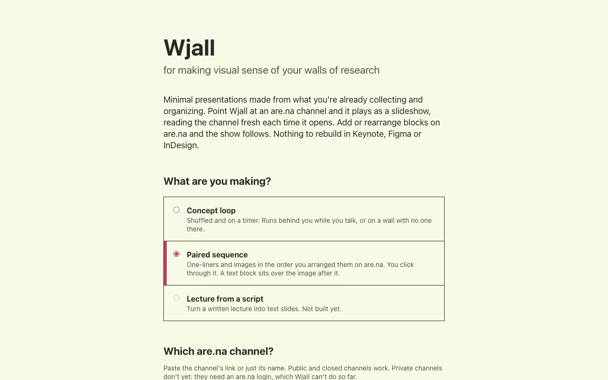
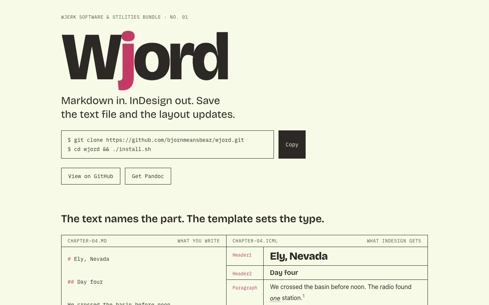
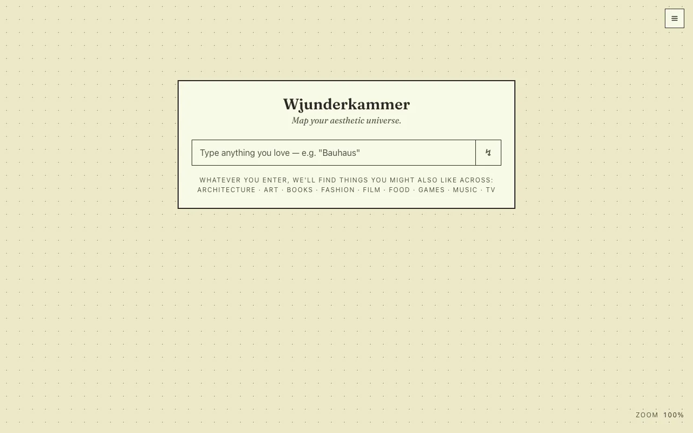
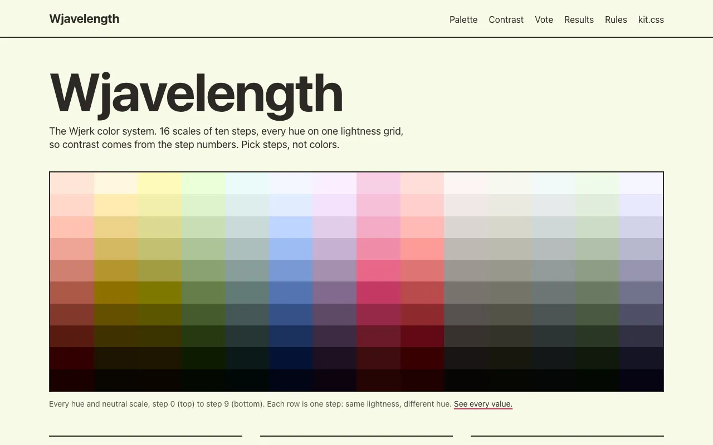
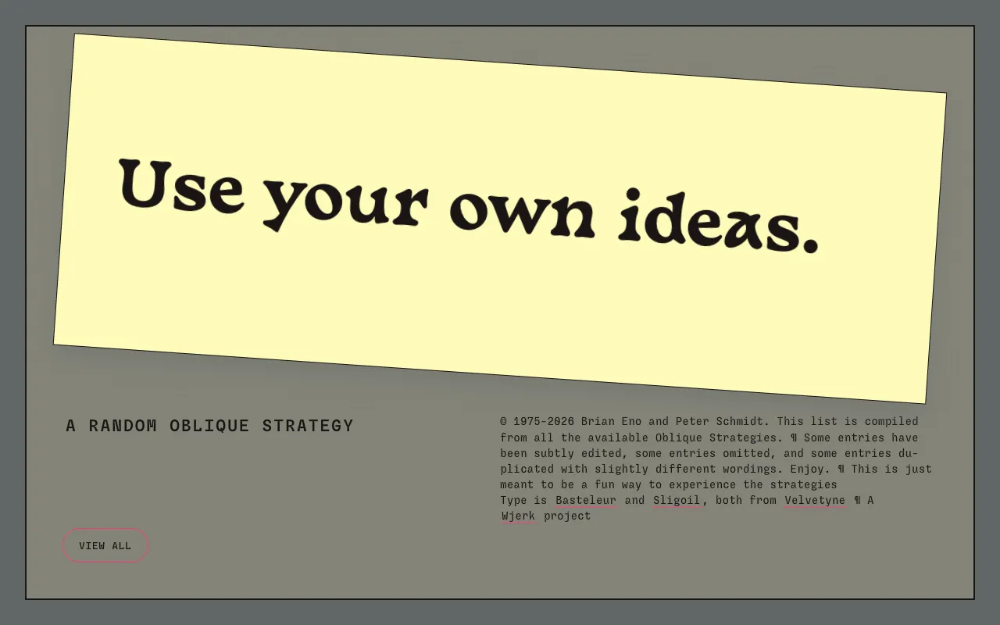
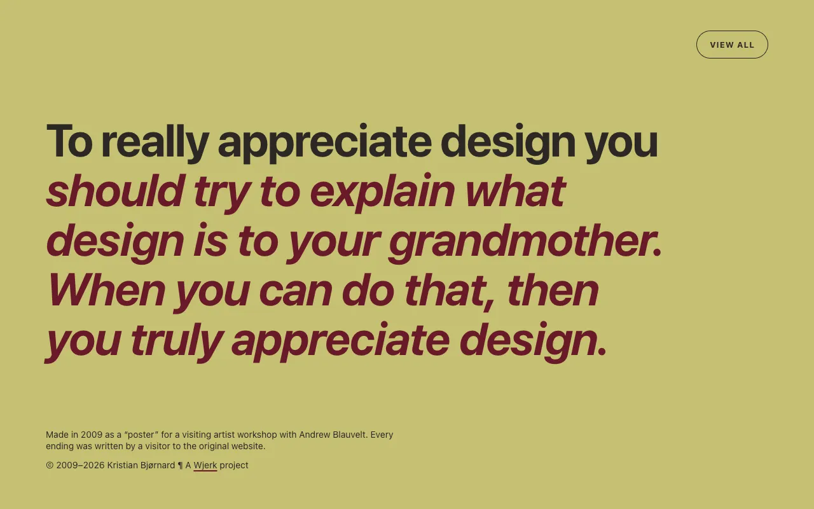

The Wjerk Software & Utilities Bundle. Ten small tools and sites so far, each made to do one job I kept doing badly with software built for everyone else. They share one color system, one icon frame, and mostly one name. I keep adding new ones, and I keep rebuilding old projects to bring them in.
Take Wjord. I write in Markdown and set books in InDesign. For years the trip between the two ran Markdown to HTML to XML to InDesign, by hand, one conversion at a time. It worked once. It never worked twice. Wjord makes it one step: save the text file, and the layout updates.
Or my vinyl cutter, a Roland GX-24. It still works. Roland stopped supporting it: the drivers are Windows-only, the Illustrator plugin ends at CC 2020, and there was never a Mac driver at all. Roland makes a good bad guy here. But the machine never needed the driver. It speaks HPGL, a plain-text language written in the 1970s to drive pen plotters. vinylCutter turns an SVG drawing into HPGL and sends it straight down the USB cable. The machine keeps cutting.
László Moholy-Nagy spent much of the 1920s building a machine of metal, glass and motorized moving parts, lit by colored bulbs, to throw moving light and shadow around a room. No brush could do what it did. He showed the Light-Space Modulator in Paris in 1930 and filmed it for Lightplay: Black White Gray. The Bauhaus taught design in workshops, where you learned a material by working it. Software is one of my materials. These tools are me working it.
The bundle
Wjeather draws twelve hours of forecast as one abstract chart. It has its own case study.
Wjord: Markdown in, InDesign out. The text names each part, and the InDesign template sets the type.
Wjall turns an Are.na channel into a slideshow that reads the channel fresh each time it opens. Add or rearrange blocks on Are.na and the show follows. Nothing to rebuild in Keynote, Figma or InDesign.
Wjunderkammer is a cabinet of curiosities for taste. Type in something you love, a film or a building or a whisky, and Claude suggests neighbors across every medium. Rate what comes back, and the map pulls what you love in close.
Wjavelength is the color system the rest of them share, with a site of its own: every scale, a contrast cheat sheet, and a voter where anyone can say yes or no to a set of colors.
Wjaffle: photograph your fridge and cupboards, get a list of what’s in them, and get something to cook. A jaffle is the toasted sandwich you press in an iron, made from whatever’s in the fridge.
OneThing shows me one task at a time from my Notion list, and nothing else. Mine is locked. The public demo deals sample tasks.
Oblique and Trady are two of my oldest web projects, from 2008 and 2009, rebuilt this year on the same kit. Oblique deals a random card from Brian Eno and Peter Schmidt’s Oblique Strategies. Trady deals visitor-written endings to “To really appreciate design you…”, a poster I made for a 2009 workshop with Andrew Blauvelt, answering Bernard Tschumi.
One family
The tools link the same kit.css, so they share colors, a type scale, dark mode, and a visible focus ring for keyboard users. The kit is built to WCAG AA and honors the reader’s own settings for text size, contrast, and dark mode. Each older tool gets brought up to it as I rebuild it.
Every icon uses the same frame: a white square, a dark brown square inside it, and a shadow made of stacked outlines. Only the pale fill and the mark change from tool to tool.
Most of the code is on GitHub. Four pieces carry open licenses so far: Wjord under MPL 2.0, Wjunderkammer and vinylCutter under AGPL 3.0, and the color kit itself in the public domain.
Ten so far. The icons for Wjord and Wjall are still in Figma.





